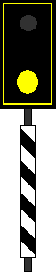

(1) Bedeutung
Halt vor dem Bahnübergang! Weiterfahrt nach Sicherung.
Signalbuch-Online
Signal Bü 0
Informationen und Vorschriften zum Bü-Signal Bü 0.
(2) Beschreibung
Eine runde gelbe Scheibe in einer gelben Umrahmung über einem schwarz-weiß schräg gestreiften Mastschild.
Scheibe, Umrahmung und Mastschild sind rückstrahlend.
Anstatt der Scheibe und der gelben Umrahmung kann das Signal auch zwei waagerecht angeordnete gelbe Lichter bzw. rückstrahlende Scheiben zeigen.
Scheibe, Umrahmung und Mastschild sind rückstrahlend.

Anstatt der Scheibe und der gelben Umrahmung kann das Signal auch zwei waagerecht angeordnete gelbe Lichter bzw. rückstrahlende Scheiben zeigen.
(3) DS 301
Im Geltungsbereich der DS 301 kann das Signal bis auf weiteres ein gelbes Licht über einem schwarz-weiß schräg gestreiften rückstrahlenden Mastschild zeigen. Das gelbe Licht kann bei NE auf Strecken mit einer zulässigen Geschwindigkeit bis zu 60 km/h entfallen.
(4) Originalbilder
Zum Öffnen der Galerie bitte Bild anklicken!